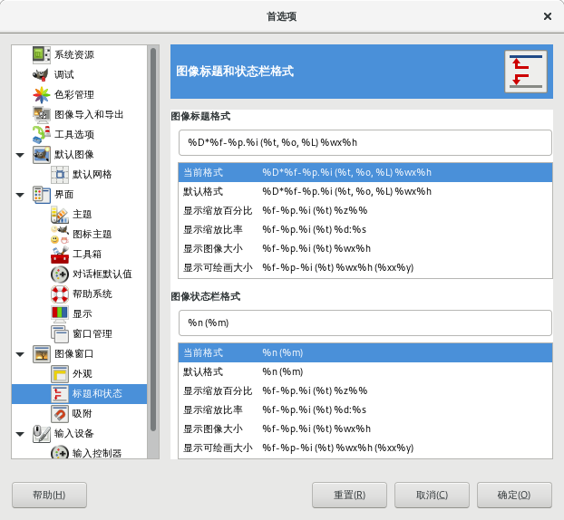
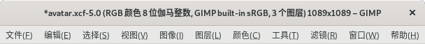
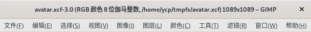

首选项→图像窗口→标题和状态
这里可以设置图像的标题栏和状态栏显示的内容。
标题栏在图像窗口顶部。
状态栏在图像窗口的底部。

首选项→图像窗口→标题和状态
标题栏格式和状态栏格式都有预先设计好的几个可以直接使用，您也可以按自己的想法进行修改。下面是含义说明：
变量 |
含义 |
|---|---|
%f |
图像文件的文件名，不含后缀名；没有名称时显示 “无标题{Untitled}” |
%F |
图像文件的完整路径，没有路径时显示 “无标题{Untitled}” |
%p |
图像的id号(唯一) |
%i |
视图编号，如果一幅图像有多个显示窗口，则每个窗口会分配不同的视图编号 |
%t |
图像类型(RGB,灰度,索引) |
%z |
缩放百分比 |
%s |
源比例系数(缩放级别 = %d/%s) |
%d |
目标比例系数(缩放级别 = %d/%s) |
%D* |
如果图像编辑后未保存，则显示 * ，否则不显示任何内容 |
%C* |
如果图像仅打开但未编辑，或保存后未再做任何编辑，则显示 * ，否则不显示任何内容 |
%l |
图层数量 |
%L |
图层数量(长格式) |
%m |
内存占用量 |
%n |
活动图层/通道的名称 |
%o |
色彩空间(ICC)/无色彩管理 |
%P |
活动图层/通道的id |
%w |
图像的宽度(像素) |
%W |
图像的宽度(物理单位) |
%h |
图像的高度(像素) |
%H |
图像的高度(物理单位) |
%u |
单位(如像素 px) |
%U |
单位缩写 |
%% |
文本“%” |
提示
%D* 和 %C* 这两个参数中的 * ，可以改为其它符号或字母/数字，但只能是一个字节，所以不支持汉字(汉字要占用两个字节)。比如您可以把 * 改成 ? ，这样也许提示的意义更明显。
[应用示例]
如果我们不太关注图层的数量，反而对文件的路径比较在意；那么，我们可以删除图层数量参数(%L和%l)，添加路径参数(%F)。这样，在标题栏就能看到图像文件的完整路径，同时，图层数量信息消失不见。
比如：
默认的标题栏格式是这样：
%D*%f-%p.%i (%t, %o, %L) %wx%h默认的标题栏会显示：文件名 + - + ID.num + (色彩模式 + ICC曲线 + 图层数量) + 宽 + x + 高
把标题栏格式改成这样：
%D*%f-%p.%i (%t, %F) %wx%h修改后的标题栏会显示：文件名 + - + ID.num + (色彩模式 + 路径) + 宽 + x + 高

默认标题栏

修改参数后的标题栏
提示
上面删除图层数量参数的同时还删除了ICC曲线参数，然后添加路径参数。